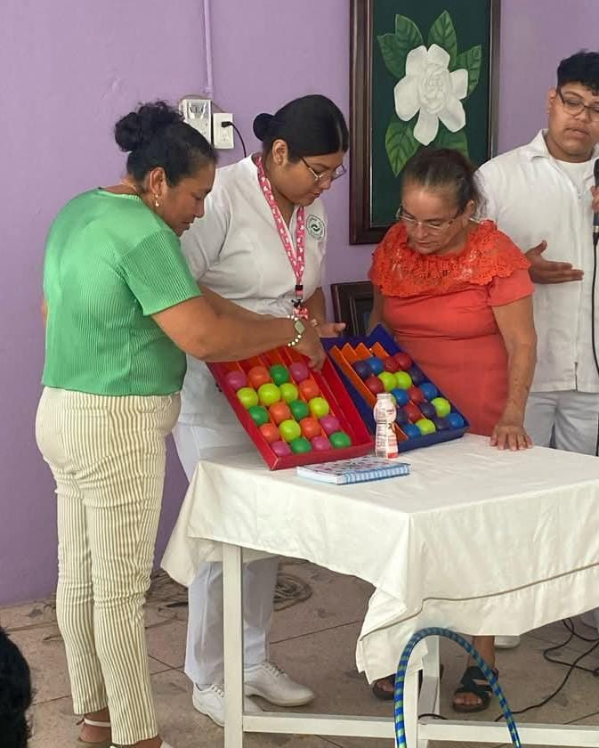
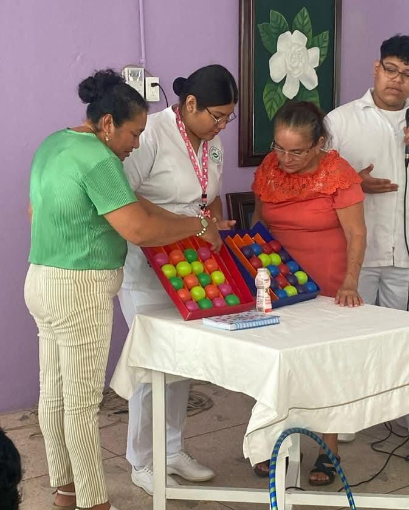

La enfermería es una profesión del área de la salud dedicada al cuidado integral del individuo, familia y comunidad en todas las etapas de la vida. Los profesionales de enfermería combinan conocimientos científicos con habilidades técnicas y una gran capacidad humana para brindar atención de calidad.
Los enfermeros desempeñan un papel crucial en el sistema de salud y su trabajo es fundamental, no solo se enfoca en el cuidado de enfermedades, sino también en la promoción de la salud, prevención de enfermedades y rehabilitación de los pacientes. Es una disciplina que requiere compromiso, empatía y constante actualización.


 
